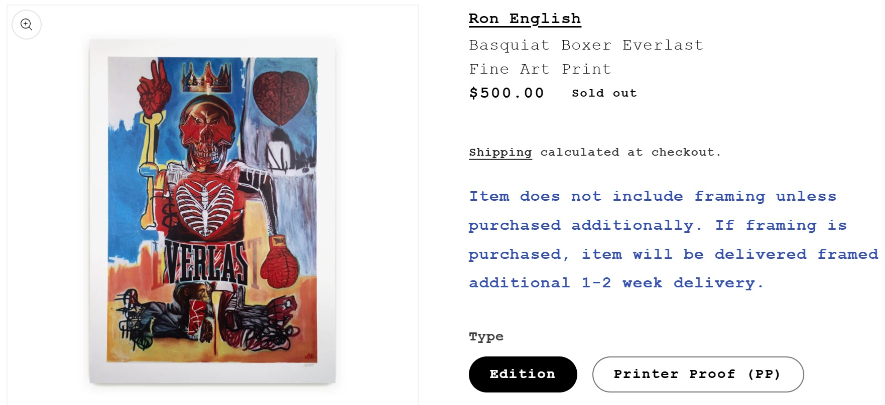
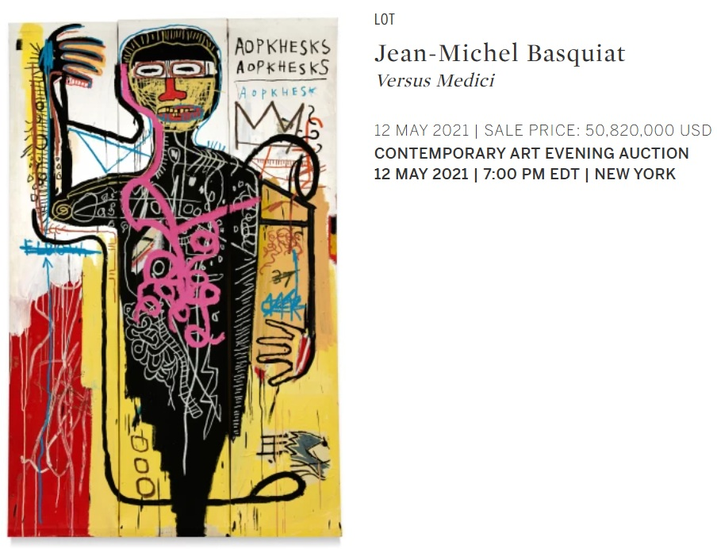

Exhibitions
English Translation Series, Pop Life Global Q Plex, Shenzhen, China, June 21–July 14, 2019.
Literature
Ron English, English Translation Series (Dongguan City, Guangdong, PRC: PopLife GLOBAL, n.d.), p. 10.
Notes
The work is documented in the printed exhibition booklet English Translation Series, which also serves as evidence of its inclusion in the exhibition.
This composition was later adapted by the artist as a limited-edition fine art print released through 1XRUN on June 11, 2021. The print measured 26 × 37 inches, was produced as a 10-color screen print on hand-deckled 410gsm Somerset Satin Fine Art Paper, and was issued in an edition of 150. The 1XRUN page also lists a Printer Proof (PP) variant. Each standard edition print was signed and numbered by the artist and came with a certificate of authenticity from 1XRUN; see the related print on 1XRUN.
This work references Jean-Michel Basquiat’s Versus Medici; a representative image is available here.
Ancillary Documentation

